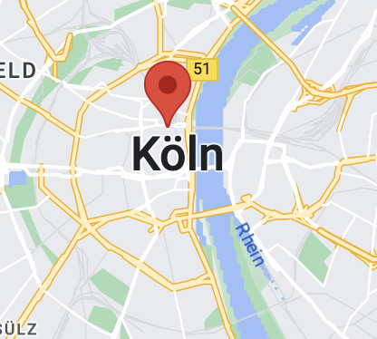

Du bist eingeladen!
The couple joyfully invites you to celebrate their special day.
Locations
Hier findet ihr Details zu den einzelnen Locations sowie Anreise-Informationen.
-

Standesamtliche Trauung
Standesamt Jork, 10. Mai 2021 um 09:00 Uhr
Die standesamtliche Trauung findet nur im engen Familienkreis statt.
Adresse: Am Gräfengericht 2, 21635 Jork
-
Kirchliche Trauung
St. Johanniskirche, 12. Juli 2020 um 15:00 Uhr
Es gibt nur begrenzt Parkmöglichkeiten, daher kommt bitte rechtzeitig oder nutzt die öffentlichen Verkehrsmittel.
-
Hochzeitsfeier
Landhaus Hoisdorf, 12. Juli 2020 um 19:00 Uhr
Sommerlich festliche Kleidung. Wir lassen es richtig krachen!
Solltet ihr Sonderwünsche bzgl. des Essens haben (Vegan, Laktoseintolleranz, etc..) lasst es uns wissen!Adresse: Dorfstraße 14, 22955 Hoisdorf
Tagesablauf
Hier findet ihr Informationen zu den einzelnen Programmpunkten unserer Hochzeit.
-
15:00 - Trauung in der Kirche
Wir würden euch bitten, pünktlich an der Kirche zu erscheinen, da direkt nach uns eine weitere Trauung stattfindet.
-
16:00 - Gemeinsames Fotoshooting vor der Kirche
Wir würden uns freuen mit allen Gästen ein gemeinsames Foto vor der Kirche zu machen.
Danach haben alle ein wenig zeit und können noch einmal die Füße hochlegen bis es dann ab 19 Uhr am Landhaus weitergeht.
Wir werden unterdessen Fotos mit unserem Fotografen machen -
17:00 - Sektempfang am Landhaus
Kein Angst - es wird auch eine Kleinigkeit zu essen geben :)
-
19:00 - Die große Feier!
Es wird gegessen, gefeiert und vielleicht auch die ein oder andere Rede gehalten.
Wir freuen uns darauf, mit euch unseren besonderen Tag zu feiern.